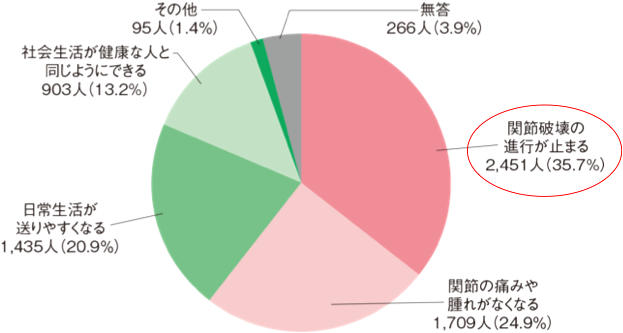

【参考】リウマチ白書：治療に一番期待すること

リウマチ白書によると、患者が治療に一番期待することは「関節の進行が止まること」である
ETN25㎎は安価とはいえ、関節破壊の進行を十分に抑えきれず患者ニーズを満たせないのでは？
出典：2015年リウマチ白書-リウマチ患者の実態＜総合編＞-
リウマチ白書によると、患者が治療に一番期待することは「関節の進行が止まること」である
ETN25㎎は安価とはいえ、関節破壊の進行を十分に抑えきれず患者ニーズを満たせないのでは？
出典：2015年リウマチ白書-リウマチ患者の実態＜総合編＞-